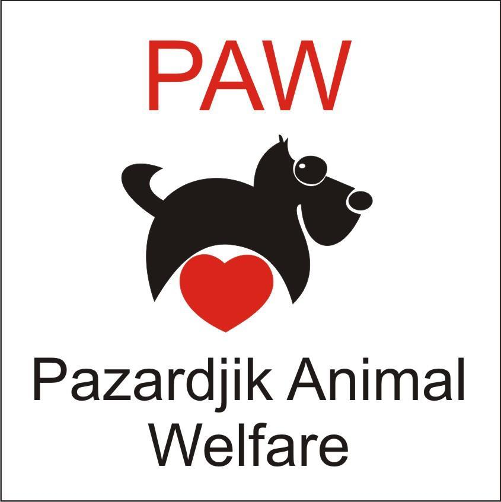

Service Section Reflection
My major service experiences this year have been hosting and teaching at the STEM Robotics Club and volunteering at the PAW Pazardzhik Dog Rescie Shelter. While I primarily focus on these in my portfolio entries below, I was also planning to volunteer for the now cancelled ACS Classical Concert.
My first long-term service experience has been teaching at the STEM Robotics Club. This experience has been very useful for me, since I have had to comu up with ways of conveying my knowledge and experience in the field of 3D-design and programming to beginners in the area. This is a fun and challenging task, since wording your explanations in a clear and easily understandable way is vital for keeping your students' attention and ensuring that they actually understand and remember what you are trying to teach them. As time went by, I experimented with different teaching methods to see what would work best. I feel like now I am more prepared to teach something to others and havea greater insight on the daily struggles of teachers.
My second long-term service experience has been volunteering at the PAW Pazardzhik Dog Rescue Shelter. There, I have come in contact with a number of rescued dogs. During my regular visits to the shelter, I was of help by walking the dogs and playing with them, which saved a lot of time and energy for the limited number of volunteers working there. Additionally, I have spread the word about the shelter through social media, attracting more attention to the noble cause of the shelter. Overall, being part of such a helpful community has been an eye-opening experience for me.
Finally, I was planning on volunteering at the ACS Classical Concert. Each year, I have noticed that a lot of students participate in the organization of the stage, managing the tickets, and welcoming the guests. This year, I wanted to be more than just a performer at the concert, since it is my final year at ACS. This is why I had made up my mind to volunteer with helping out with the overall organization of the concert.

STEM Robotics Club Introductions
November 20, 2019
Here begins this year's journey of the STEM Robotics Club at ACS. Being the lector of the club, I introduced the new members to the club’s goals and tools.
First, we discussed possible long-term projects that would be of interest to the club members. Considering the available recourses, namely the 3D-printers in SCIFI and the Arduino kits, everyone agreed on designing and programming a 3D-printed car. It was a nice opportunity for me to base further modelling and programming lessons on. I have considerable background in programming LEGO cars with Python, and I even participated in the Robotex competition held in Tallinn, Estonia a couple of years ago.
With all the planning out of the way, it was time to introduce the members to the various resources we had at hand. Firstly, I showed them how to use SketchUp, a free online tool for developing 2D and 3D models. This is a great tool, since it is lightweight and also online based. The members of the club could use it from any device, including the ACS Chromebooks. Additionally, I showed them the 3D printers in SCIFI, so that they could realize their ideas from SketchUp.
STEM Robotics Club Model Design and 3D-Printing
December 4, 2020
Since the students decided on designing, printing, and programming a 3D-printed car, I assisted them in effectively getting started with SketchUp. During our regular meetings after classes, we used the RaspberryPi PCs in SCIFI. These devices are efficient and accessible for a larger group of students, since the number of main PCs in SCIFI is limited. Additionally, the RaspberryPi kit comes with a motherboard programming set, which would later come into use when programming the car.
Once all the club members logged in their free SketchUp accounts, provided by ASC, I introduced them to the basic tools available in the program. The ones we would most commonly use were the draw tool, the measure tool, and the extrude tool. Using only these tools, a beginner could design pretty much any non-rounded shape, which was exactly what we needed for the car project. After I showed them the basic tools and explained how to use them, the students began designing their own models. They exchanged ideas and tried to figure out the easiest and most efficient way to use SketchUp to design a working model. I observed their progress and helped them whenever they needed assistance. Additionally, I was working on my own prototype, which I focus more on in the Creativity section of this portfolio.
STEM Robotics Club Lessons for the Future
February 18, 2020
Hosting the STEM Robotics Club and teaching 3D design and Python programming has been a valuable experience for me. Throughout the year, I have come across various obstacles in 3D design with SketchUp and programming Arduino using Python. Additionally, I got to experience how it felt to be a teacher, a position that came with its challenges and responsibilities, but was also very fun and rewarding.
I learnt a lot of valuable life lessons when it comes to the topic of teaching something you have experience in to beginners. I had to think carefully about the way I presented my skills, knowledge, and experience to beginners in the area.
PAW Pazardzhik Dog Shelter Visit
Fall, 2019
My mother knows an incredible woman, who is in charge of a dog rescue shelter in the town of Pazardzhik. The whole operation is entirely her doing, and it is self-funded, largely dependent on sporadic donations from the general public. When my mother first heard about PAW and checked their activities, she felt strongly about helping them, and I supported her.
My family and I have been visiting the shelter on a regular basis for the last two years. We sometimes invite family friends to come along. We bring a lot of snacks for the dogs, and we also donate some money to help the shelter with various expenses, such as treatment costs and food supplies. Since the shelter rescues abandoned dogs, often times they have to treat them from severe wounds and diseases and even put them through expensive medical procedures to save their lives and help them find a new home.
I strongly believe that supporting small communities who try to help mistreated dogs is very important. For the past few years, word about PAW has spread throughout social media. Donations have been coming in, which has helped the shelter manage the ever increasing demand for food and medical supplies. I am glad that I could contribute to this positive turn of events.

PAW Pazardzhik Dog Shelter Volunteering
Fall, 2019
Apart from bringing food and donating money, my family and I also want to have some personal interaction with the dogs. Due to the large numbers of dogs, walking every single one of them twice a day is a daunting and almost impossible task for the small team of volunteers at the shelter. This is why it is much appreciated when visitors volunteer to walk their dogs.
All the dogs are extremely friendly and just want to cuddle and play. It is surprising to see such an attitude, having in mind their harsh past, full of mistreatment and pain. Overall, it was an eye-opening experience.
PAW Pazardzhik Dog Shelter Other Dogs
Fall, 2019
After taking some of the smaller and medium-sized dogs for a walk, we usually go to see the bigger dogs, including Mecho - an year-old Bulgarian Karakachanka, who is virtually adopted by my family. They are kept in a separate area, since they react loudly to visitors and other dogs. Even though some of them are barking loud, all of them remain friendly and playful. It is obvious that they make noise to attract our attention, and not to show aggression.
It is always hilarious looking at these massive scary-looking dogs play around and make funny faces. We give them treats and play with them in the backyard of the shelter. Since their strength could easily overwhelm unexperienced "dog walkers" like us, the owner lets some of them roam freely in the yard.
Spending time at the dog shelter is always a refreshing experience that fills my heart with empathy and positive energy. Throughout the years, I have come to realize just how important taking care of abandoned and mistreated dogs is, since showing even a little love and affection could instantly make them happy and feel loved again.